Past and Current Ph.D. Students
This page is dedicated to my past and present Ph.D. students. I have
been extraordinarily fortunate to advise so many talented and
dedicated people. Their accomplishments reflect their own ability,
creativity, and hard work. I am grateful to have had the opportunity
to support them during an important stage of their careers.
The list includes students advised at the University of Missouri and the University of Rochester, as well as students co-advised with colleagues at other institutions where indicated. Career information is updated periodically.
The list includes students advised at the University of Missouri and the University of Rochester, as well as students co-advised with colleagues at other institutions where indicated. Career information is updated periodically.
Notation
(*) indicates that the student obtained a postdoctoral position at a Ph.D.-granting institution after graduation.
(**) indicates that the student currently holds a tenure-track or tenured academic position.
(*) indicates that the student obtained a postdoctoral position at a Ph.D.-granting institution after graduation.
(**) indicates that the student currently holds a tenure-track or tenured academic position.
Students
1) Georgiy
Arutunyants (Ph.D. 2006) Georgiy got his Ph.D. from the University of Missouri in 2006 in geometric measure theory and decided to seek a career in industry. After a highly successful stint at SAS and Prognos Inc, George is now the senior director of analytics at Parker Avery.
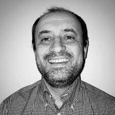
2) Derrick Hart (Ph.D. 2008) (*)
Derrick got his Ph.D. from the University of Missouri in 2008 in additive combinatorics and worked as a postdoc at Rutgers and Kansas State before moving into software engineering in the Kansas City area.
3) Doowon Koh (Ph.D. 2008) (*) (**)
Doowon Koh got his Ph.D. from the University of Missouri in 2008 in harmonic analysis and analytic number theory. He is now a Professor of Mathematics at Chungbuk University in Korea. Doowon has graduated two Ph.D. students of his own.
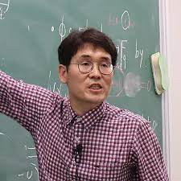
4) Jeremy Chapman (Ph.D. 2010) (**)
Jeremy got his Ph.D. from the University of Missouri in 2010 in geometric combinatorics. He is now a Professor of Mathematics at Lyon College in Arkansas.
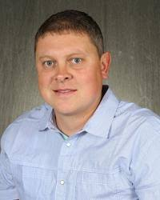
5) Le Anh Vinh (Ph.D. 2010) (co-advised with Noam Elkies) (*) (**)
Vinh got his Ph.D. from Harvard in 2010 in combinatorics. He is now a Professor of Mathematics at VNIES in Hanoi, Vietnam.
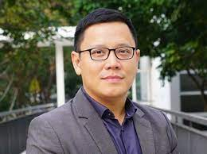
6) David Covert (Ph.D. 2011) (**)
David got his Ph.D. from the University of Missouri in 2011 in number theory and combinatorics. He is now an Associate Professor of Mathematics at UMSL in St. Louis, Missouri. David has co-advised a Ph.D. student with my colleague Jonathan Pakianathan.
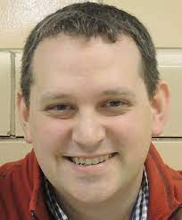
7) Steven Senger (Ph.D. 2011) (*) (**)
Steven got his Ph.D. from the University of Missouri in 2011 in harmonic analysis and combinatorics. He is now an Associate Professor of Mathematics at Missouri State University.
8) Krystal Taylor (Ph.D. 2012) (*) (**)
Krystal got her Ph.D. at the University of Rochester in 2012 in harmonic analysis. She is now an Associate Professor of Mathematics at Ohio State University. Krystal has recently graduated a Ph.D. student of her own.
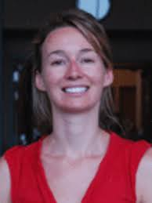
9) Esen Aksoy (Ph.D. 2014) co-advised with Jon Pakianathan
Esen got her Ph.D. from the University of Rochester in 2014 in number theory. She is now a Visiting Assistant Professor at Purdue University.
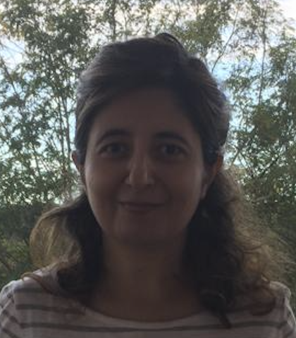
10) Mike Bennett (Ph.D. 2015)
Mike got his Ph.D. from the University of Rochester in 2015 in geometric combinatorics. He is now a mathematics instructor in upstate NY.
11) Dee Ethier (Ph.D. 2016) co-advised with Jon Pakianathan
Dee got her Ph.D. in 2016 from the University of Rochester in 2016 in number theory. She is now a computer programmer in the Rochester area.
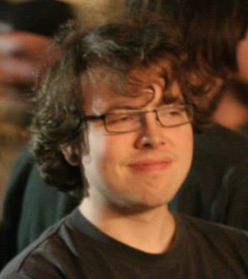
12) Bochen Liu (Ph.D. 2016) (*) (**)
Bochen got his Ph.D. from the University of Rochester in 2016 in harmonic analysis. He is now an Assistant Professor of Mathematics at Southern Chinese University.
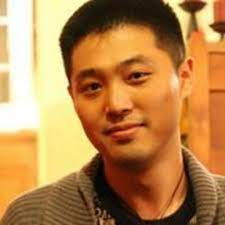
13) Brendan Murphy (Ph.D. 2016) co-advised with Jon Pakianathan (*)
Brendan got his Ph.D. from the University of Rochester in 2016 in number theory and combinatorics. He is now a lecturer at the University of Bristol.
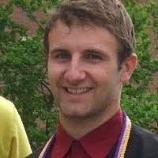
14) Philipp Birklbauer (Ph.D. 2019)
Philipp got his Ph.D. from the University of Rochester in 2019 in number theory and combinatorics. He is now a computer programmer in the Chicago area.
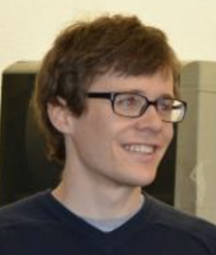
15) Nick Chatzikonstantinou (Ph.D. 2020) co-advised with Sevak Mkrtchyan (*)
Nick got his Ph.D. from the University of Rochester in 2020 in harmonic analysis. He is now a postdoctoral researcher in Okinawa.
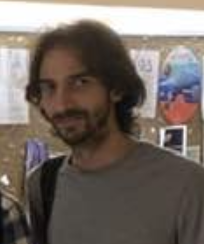
16) Alex McDonald (Ph.D. 2021) (*) (**)
Alex got his Ph.D. from the University of Rochester in 2021 in harmonic analysis and combinatorics. He is now an Assistant Professor of Mathematics at Kennesaw State University.
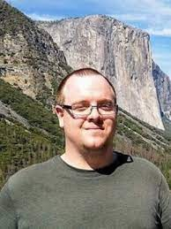
17) Jonathan Passant (Ph.D. 2021) (*)
Jonathan got his Ph.D. from the University of Rochester in 2021 in combinatorics. He is now a Heilbronn Postdoctoral Fellow at the University of Bristol.
18) Brianna Vick (Ph.D. 2021) co-advised with Arjun Krishnan (**)
Brianna got her Ph.D. at the University of Rochester in 2021 in harmonic analysis. She is now an Assistant Professor of Mathematics at Clayton University in Atlanta.
19) Belmiro Galo (Ph.D. 2021)
Belmiro got his Ph.D. at the University of Rochester in 2021. He is now a Visiting Assistant Professor at Colgate.
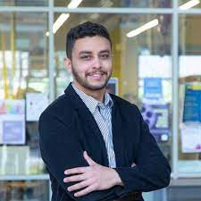
20) Gail Jardine (Ph.D. 2022)
Gail wrote a Ph.D. dissertation in geometric combinatorics. Her work centered around the properties of the distance graph in vector spaces over finite fields. Gail now works for a defense contractor in the Washington D.C. metropolitan area.
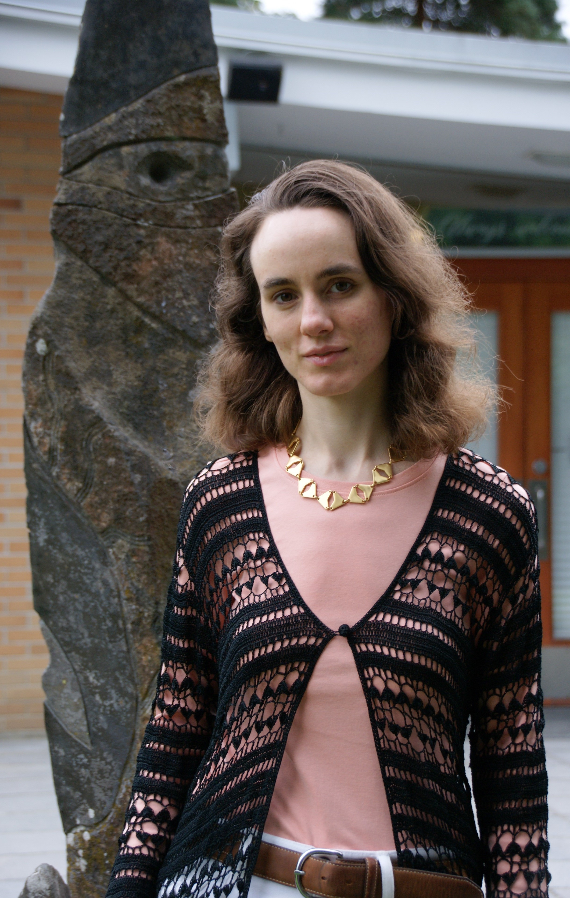
21) Tingsong Jiang (Ph.D. 2022)
Tingsong's thesis is in geometric combinatorics. He was working on configuration problems that combine different types of group actions in the context of naturally arising hypergraphs.
22) Tritium Shen (Ph.D. 2022) co-advised with Sevak Mkrtchyan
Tritium's thesis was on point configuration problems in fractal subsets of Euclidean space. In particular, it is about dilates of simplexes that are determined by subsets of sufficiently large Hausdorff dimension. Tritium is now a data science intern in the Houston area.
23) Shashank Chorge (Ph.D. 2023) (*)
Shashank worked in analytic number theory and learning theory. His work centered around derivatives of the Riemann zeta function and the Vapnik-Chervonenkis dimension of classes of indicator functions of subsets of the integer lattice. Shashank has recently accepted a postdoctoral position at the Indian Institute of Technology.
24) Brian McDonald (Ph.D. 2023) (*)
Brian is working in harmonic analysis and frame theory. His work is centered around determining whether the L2 space associated with a given measure does, or does not possess a frame of exponentials. He has also done work in geometric combinatorics. Brian just accepted a postdoctoral position at the University of Georgia.
25) Donggeun Ryou (Ph.D. 2024) (*)
Donggeun Ryou is working in harmonic analysis, number theory and probability. Donggeun's work is centered around the classical Lambda_p problem and Bourgain's proof of the existence of non-trivial Lambda_p sets of every possible order. Donggeun is now a postdoctoral researcher at the Indiana University.
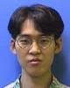
26) Firdavs Rakhmonov (Ph.D. 2024) (*) co-advised with Kaave Husseini
Firdavs is working in geometric analysis and geometric combinatorics. In geometric analysis his work is centered around the distribution of eigenvalues of the Laplacian on product manifolds. In geometric combinatorics, his work is focused on generalized configuration problems in vector spaces over finite fields. Firdavs is now a postdoctoral researcher at St Andrews University in Scotland.
27) Shengze Duan (Ph.D.) (*)
Shengze is working on Lp improving properties of operators on fractal spaces with applications to partial differential equations and configuration problems in geometric measure theory. Next year he will be a postdoctoral researcher at Technion in Israel.

28) Quy Pham (Ph.D. 2026-expected) (*)
Quy is working on Falconer type problems in geometric measure theory with a strong Fourier Integral Operator component. Next year he will be a postdoc at Virginia Tech University.

29) Pablo Bhowmick (Ph.D. 2026-expected) (*)
Pablo is working on problems that involve connections between geometric combinatorics and learning theory. His work is centered around the computation of the Vapnik-Chervonenkis dimension of classes of classifiers in modules over finite rings. Next year he will be a postdoctoral researcher at the Ben Gurion University in Israel.
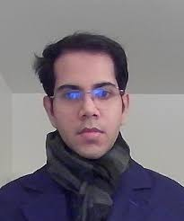
30) Hari Nathan (Ph.D. 2026-expected) (*)
Hari is working on fractal structures in large data sets. Starting in Fall 2026, Hari will be a postdoctoral researcher at SUNY Binghamton.
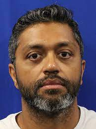
31) Will Burstein (Ph.D. 2027-expected)
Will is working on problems in geometric combinatorics and pure and applied data science.

32) Shantanu Deodhar (Ph.D. 2027-expected)
Shantanu is working on Fourier uncertainty principles, spectral synthesis, and connections with probability theory.

33) Ella Yu (Ph.D. 2028-expected)
Ella is working on uncertainty principles in the discrete setting and connections with combinatorial geometry
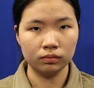
34) Zhihe Li (Ph.D. 2028-expected) co-advised with Alexia Yavicoli
Zhihe is working on problems in harmonic analysis and geometric measure theory.
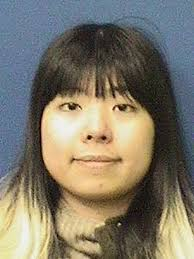
35) Haoyuan Tian (Ph.D. 2028-expected)
Haoyuan is working on the theoretical foundations of data science.
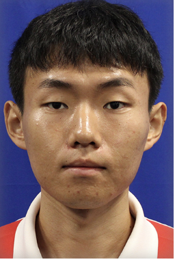
36) Alex Liu (Ph.D 2030 - expected)
Alex Liu is working on theoretical aspects of information theory
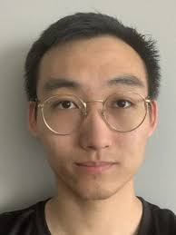
37) Josh Morales (Ph.D. 2030 - expected)
Josh is working on variants of the Erdős--Falconer distance problem in the discrete setting.
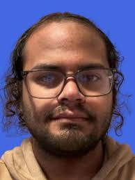
38) Kellen Adkins (Ph.D. 2030 - expected)
Kellen is working on Falconer type configuration problems
39) Svetlana Pack (Ph.D. 2030 - expected)
Svetlana is working in complexity theory and connections to Fourier analysis
Career Statistics and Countries of Origin
Students with a postdoc in a PhD granting institution after
graduation: 18/30 (60%) Students in academia: 22/30 (73%)
Students in industry: 8/30 (27%)
Countries of origin: Azerbaijan (1), Austria (1), Brazil (1), China (8), England (1), Greece (1), India (4), Korea (2), Tajikistan (1), Turkey (1), USA (16), Vietnam (2)